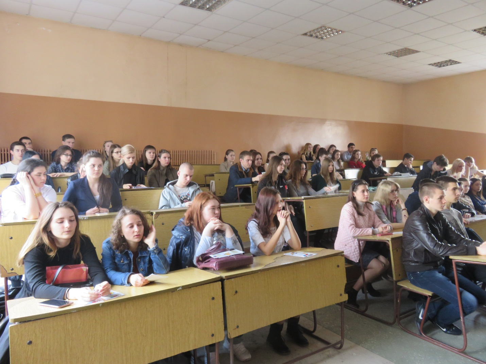
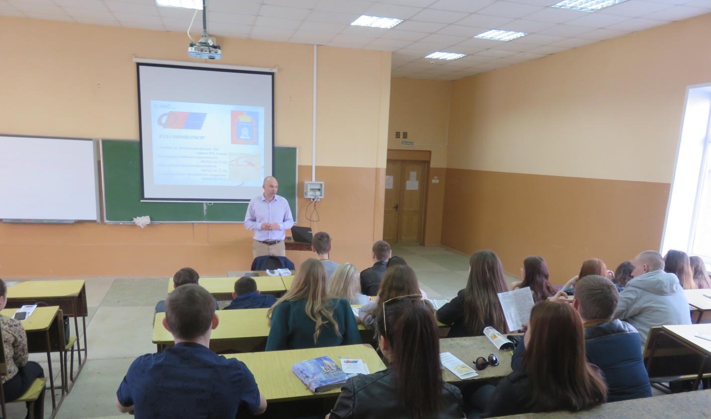
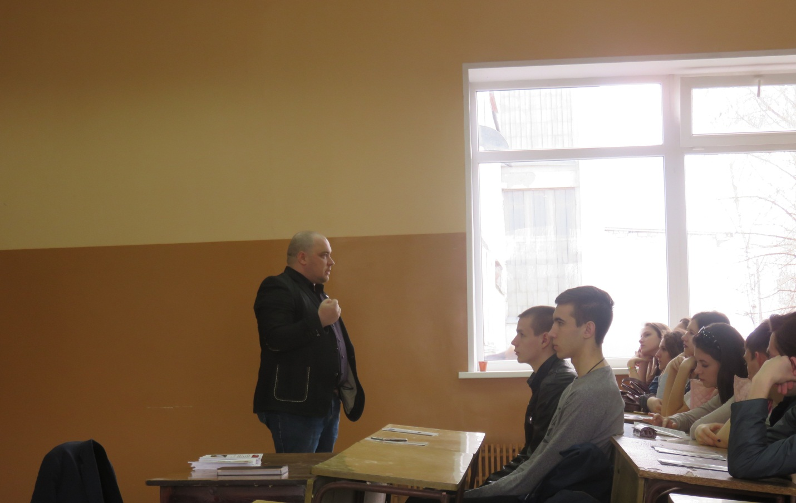

«Дни финансовой грамотности» в ТГТУ
13 апреля 2017 года перед студентами Тамбовского государственного технического университета в рамках ежегодной акции «Дни финансовой грамотности» выступили заместитель генерального директора АО МК «Фонд содействия кредитования малого и среднего предпринимательства Тамбовской области» (далее - Фонд) А.Н. Шепелёв и руководитель Центра поддержки молодёжных инициатив А.И. Евсейчев.
Представители Фонда акцентировали внимание на том, что финансовая грамотность является одним из главных условий повышения уровня жизни как граждан, так и всей страны. Учитывая усложнение системы и появление разнообразных услуг, граждане должны уметь принимать взвешенные решения по их использованию, получать полезную информацию в области денежных отношений, уметь планировать бюджет.
В конце мероприятия все желающие смогли задать интересующие их вопросы представителям Фонда.


